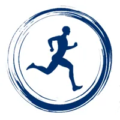

Reset de Mobilidade · teste gratuito
Teste de Mobilidade em 1 minuto
São 4 perguntas rápidas e o teste de sentar e levantar do chão, criado por um médico brasileiro e estudado em mais de 2 mil pessoas.
No fim você recebe a sua nota e o que ela significa.
Como você acorda na maioria dos dias?
Subir escada ou agachar para pegar algo no chão...
Qual é a sua idade?
Você já tentou alongamento, pilates ou fisioterapia?
Agora o teste de sentar e levantar
- Fique em pé, descalço, com espaço livre ao redor.
- Cruze os pés e desça até sentar no chão, de pernas cruzadas.
- Levante de volta. Tente não usar as mãos nem os joelhos.
⚠️ Faça perto de uma parede ou de uma cadeira. Se tiver dor forte, lesão ou cirurgia recente, pule esta parte.
Quantos apoios você usou para SENTAR?
Conta como apoio: mão, joelho, antebraço ou a lateral da perna no chão.
E quantos apoios para LEVANTAR?
Você perdeu o equilíbrio em algum momento?